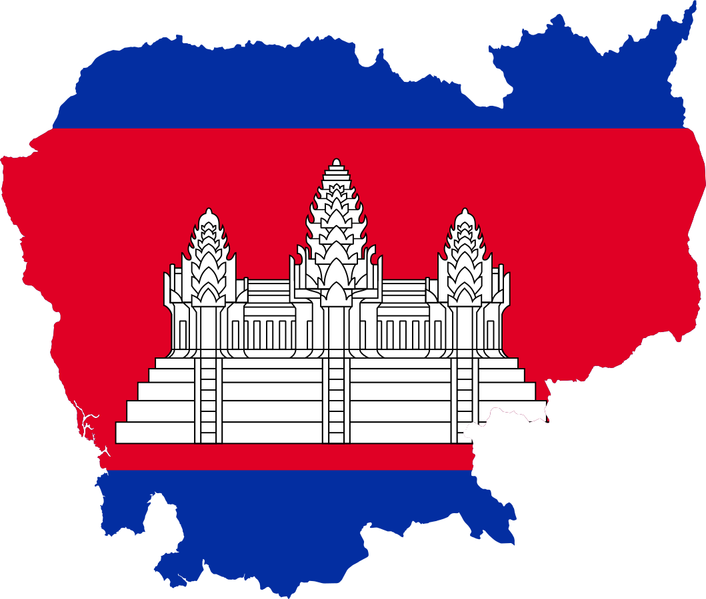
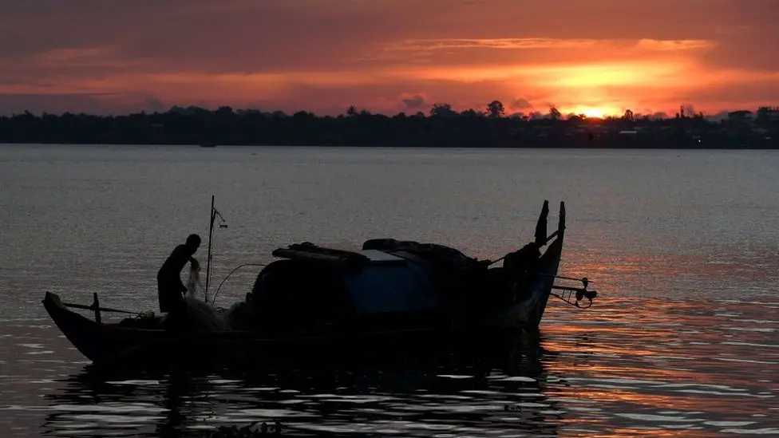

Cambodia, country in mainland Southeast Asia. Cambodia is largely a land of plains and great rivers and lies amid important overland and river trade routes linking China to India and Southeast Asia. The influences of many Asian cultures, alongside those of France and the United States, can be seen in the capital, Phnom Penh, one of a handful of urban centers in the largely rural country.

Cambodia’s climate is governed by the monsoon winds, which define two major seasons. From mid-May to early October, the strong prevailing winds of the southwest monsoon bring heavy rains and high humidity. From early November to mid-March, the lighter and drier winds of the northeast monsoon bring variable cloudiness, infrequent precipitation, and lower humidity. The weather between these seasons is transitional. Maximum temperatures are high throughout the year, ranging from about 82 to 83 °F (28 °C) in January, the coolest month, to about 95 °F (35 °C) in April. Annual precipitation varies considerably throughout the country, from more than 200 inches (5,000 mm) on the seaward slopes of the southwestern highlands to about 50–55 inches (1,270–1,400 mm) in the central lowland region. Three-fourths of the annual rainfall occurs during the months of the southwest monsoon.
Over the two decades before COVID-19 struck in 2020, Cambodia blossomed economically. Cambodia’s economy grew at an average annual rate of 7.6 percent between 1995 and 2019, driven largely by tourism, manufacturing exports, real estate, and construction, making it one of the fastest-growing economies in the world. After reaching lower middle-income status in 2015, it set its sights on becoming an upper middle-income economy by 2030 and higher-income economy by 2050.
Ethnic Khmer make up 90-94 per cent of the entire population, with the remainder comprised of four distinct groups: Cham, indigenous highland communities, ethnic Chinese and ethnic Vietnamese, plus other smaller minority groups such as the Khmer Krom and the Kuy people.
However, the government formally recognizes only Cham and Khmer Loeu – a term that is increasingly used to confliate indigenous peoples with Khmer nationalism. The government does not recognize the international designation of ‘indigenous peoples’ but refers to such groups as ethnic minorities.
There are so many cultural events and festivals, you are bound to soak up the atmosphere of some of them while you travel in the region. Better yet, you can plan your travels to make sure you’re here for them!

Sompot Chong Kben (Khmer: សំពត់ចងក្បិន) was the preferred choice of women of the upper and middle classes for day-to-day wear, although the practice died out at the beginning of the twentieth century. It dates back to ancient Cambodia, when deities were said to wear it. Scholars consider it ultimately to derive from the Indian Dhoti.[5] Unlike the typical sampot, it is more like pants than a skirt. It is a rectangular piece of cloth three metres long and one metre wide.

Av chang pong (Khmer: អាវចងពង់) is a piece of fabric in any color worn by Khmer people at the end of the 13th century. It was primarily worn by women, who started using it to cover their chest, leaving only the stomach uncovered. This method, called "Chang Pol", covered the back and each side of the fabric to join at the chest and was rolled up and tied.It then evolved into Tronum, a thick and strong fabric cover on the chest, which hugged the body closely.